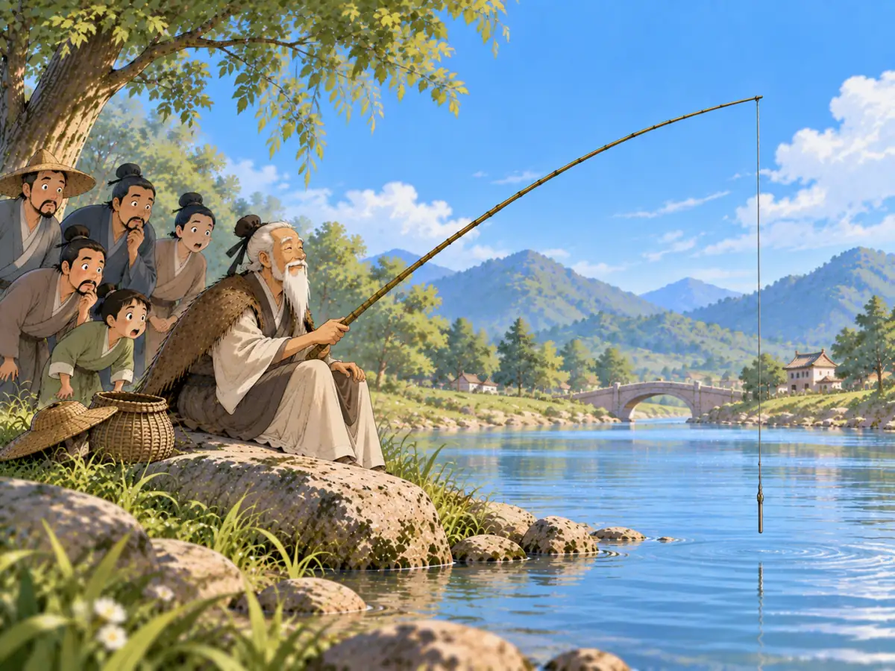

愿者上钩
The Willing One Takes the Hook

Jiang Ziya sits by the river with a straight, baitless hook while surprised passersby watch him.
很久以前，有一位老人叫Jiāng Zǐyá · 商周之际的重要人物，又称吕尚、姜太公，后来辅佐周文王。。他常常坐在河边，手里拿着一根鱼竿。路过的人很快发现了一件奇怪的事。他的鱼钩上没有鱼饵。更奇怪的是，那根鱼钩还是直的。“你这样怎么可能钓得到鱼呢？”有人问。姜子牙却一点也不着急。因为他真正等的，本来就不是鱼。他是在等一个能够发现他的人。姜子牙花了很多年学习怎样治理国家、怎样帮助一位好的君主。可是，他并不想到处追着别人，求他们给自己一个位置。于是，他就在河边等。后来，Zhōu Wén Wáng · 周朝建立前的重要领袖，传说中发现并重用姜子牙的人。听说了这位奇怪的老人，特地来见他。两个人谈了很久。周文王很快发现，姜子牙懂的可不只是钓鱼。他请姜子牙做自己的谋士，帮助他处理国家大事。原来，这才是姜子牙一直在等的“鱼”。后来，人们讲这个故事时，又加入了一个很有名的说法：姜太公用直钩、不放鱼饵来钓鱼，愿意来的，自然会来。于是便有了：“姜太公钓鱼——愿者上钩。”有时候，一个坐在河边钓鱼的人，等的根本不是鱼。
Long ago, an old man named Jiāng Zǐyá · 姜子牙 · An important figure near the end of the Shang period, also known as Lü Shang and Jiang Taigong, who later advised King Wen of Zhou. sat beside a river with a fishing rod. People passing by noticed something strange. His hook had no bait. Even stranger, the hook was straight. “How are you going to catch a fish like that?” someone asked. Jiang Ziya did not seem worried. He was not really waiting for a fish. He was waiting for the right person to notice him. Jiang Ziya had spent many years studying how rulers could govern wisely. He believed he could help a good ruler, but he did not want to chase after one asking for a job. So he waited by the river. One day, Zhōu Wén Wáng · 周文王 · A major leader before the Zhou dynasty was founded who, in the story, recognizes Jiang Ziya’s ability. heard about the unusual old fisherman and came to meet him. The two talked. King Wen quickly realized that Jiang Ziya knew far more about running a country than catching fish. He invited Jiang Ziya to become one of his advisers. And that was the catch Jiang Ziya had really been waiting for. Later, people told the story with an even more unusual detail: Jiang Ziya fished with a straight hook and no bait, saying that whoever was willing could come to him. That is where the saying “Jiang Taigong goes fishing—the willing one takes the hook” comes from. Sometimes, the person holding the fishing rod is not really waiting for a fish at all.